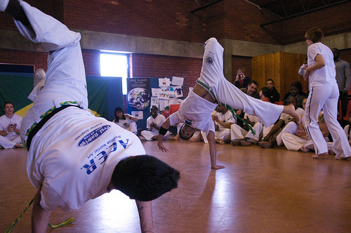
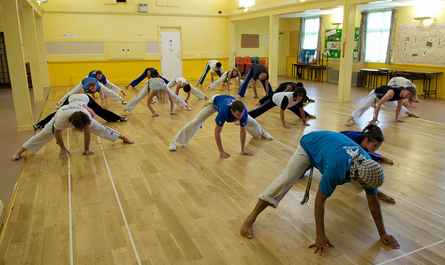
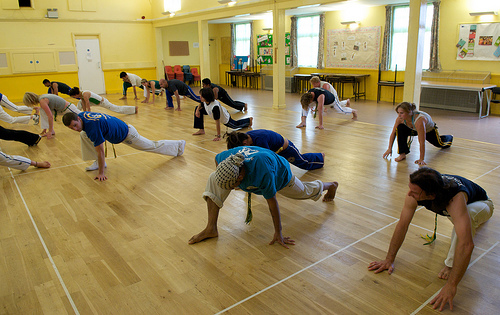
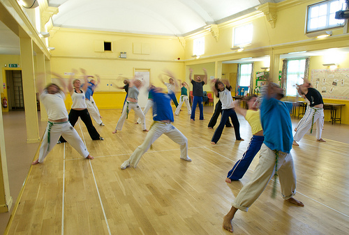
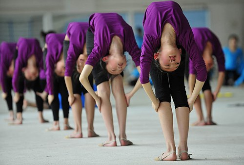

Важность гибкости и растяжки

Гибкость — необходимый компонент при занятиях капоэйрой. Она способствует развитию мышечной ткани, улучшает здоровье суставов и помогает предотвратить травмы. И хотя, гибкость важна также, как силовые тренировки и развитие выносливости, ей часто пренебрегают. И тот факт, что вы выполняете статические и динамические упражнения несколько раз в неделю на тренировках, не означает, что вы должны пренебрегать растяжкой в остальные дни, когда вы не тренируетесь.
Мы склонны недооценивать важность гибкости в нашей жизни, хотя она дает множество преимуществ:
- Развитая гибкость ускоряет кровообращение. Ускоренный ток крови повышает мышечную эластичность, дает вам больше выносливости, сил и здоровья костей и суставов.
- Растяжка расслабляет тело, снимает напряжение и стресс, приводит к улучшению осанки и помогает уменьшить болезненность и усталость мышц.
- Увеличивается диапазон движений. Это снижает нагрузку на суставы и, как результат, содержит их более здоровыми.
- Благодаря большой амплитуде движений улучшается равновесие и координация.
Гибкость — это способность человека выполнять упражнения с большой амплитудой. Благодаря растяжке мы можем увеличить диапазон, в котором совершаем движения. Со временем мышцы привыкают к более вытянутой позиции, что повышает нашу гибкость. Уровень гибкости зависит от различных факторов: тип сустава, эластичность сухожилий и связок, способность мышц расслабляться, температура тела, возраст и пол, тип телосложения и индивидуальное развитие. Каждый человек уникален и некоторые из нас, естественно, более гибкие, чем другие. Важно научиться работать в рамках своих возможностей.
Большинство из нас постоянно сидит за компьютером, что является причиной сутулости и округлых плеч. Это, в свою очередь, приводит к боли в шее, плечах и пояснице. Занятие капоэйрой в такой позе, увеличивает риск получить травму. Ещё, например, современный сидячий образ жизни ослабляет бицепсы бедер и ягодицы, и вы запросто можете повредить их на тренировке. Поэтому растяжка должна стать важным элементом в ваших ежедневных тренировках, чтобы потом вам не «защемило» и не тянуло тут и там.

Я усвоил этот урок на собственном горьком опыте. Я всегда был очень активным, но никогда не растягивался достаточно, потому что и так «слишком мало времени» на тренировку. До тех пор пока я не надорвал связки бедра в прошлом году. Я не мог нормально ходить в течение нескольких месяцев, а боль в бедре до сих пор дает о себе знать. Сейчас я каждый день растягиваюсь, даже когда у меня нет тренировок. Я стал более гибким и чувствую себя более уверенно. (прим. в оригинале автор описывает свой опыт. В этом абзаце я написал о себе).
Многие люди растягиваются только на тренировках. Кроме этого, очень важно следить за своим организмом постоянно — в какой позе вы сидите, как вы ходите, как стоите. Наши ежедневные позы очень сильно влияют на общее физическое состояние. Если вы хотите оставаться здоровым до конца жизни, то вы не найдете лучшего момента чтобы начать следить за собой, чем прямо сейчас. Ведь с возрастом ваша гибкость будет только уменьшаться. А если у вас есть старые травмы, то уделите время и им, чтобы снизить риск рецидива. Вы никогда не задумывались почему йога и пилатес так популярны у пожилых людей? Мы злоупотребляем своей молодостью, не задумываясь о последствиях, а с возрастом организм даст знать о каждой болячке, полученной в молодости.

Есть два основных вида растяжки, основное отличие между которыми заключается в способе нагрузки на мышцы:
Статическая растяжка. Это наиболее распространенный метод. Вы медленно растягиваетесь до появления легкой боли или дискомфорта и остаетесь в таком положении некоторое время. Каждую позу следует удерживать в течение 10-60 секунд 3-4 раза за тренировку. Вы должны отчетливо ощущать, как растягиваются ваши мышцы. Лучшее время для такой растяжки — после физических упражнений, когда ваши мышцы хорошо разогреты. Кроме того растяжка после интенсивной тренировки помогает облегчить мышечные боли на следующий день, ускоряя выведение молочной кислоты из волокон.
Динамическая растяжка. В отличие от статической, динамическая растяжка делается в движении. Есть движения, во время которых одна из конечностей оказывается в растянутом положении. Самый простой пример — выпады или махи. Расширение амплитуды растяжки достигается за счет постепенного увеличения диапазона, скорости или общей интенсивности движений. С этим видом растяжки надо быть очень аккуратным и быть хорошо разогретым, так как он более травмоопасен, однако он наиболее эффективен в профессиональном спорте, когда необходимо добиться ощутимых результатов в короткое время.
Отдельно выделяют ещё баллистическую растяжку, но это крайняя степень динамической растяжки.
Это, пожалуй, наиболее сомнительная техника, когда движения делаются размашисто и резко. За счет такой техники осуществляется рывковое травматическое растяжение соединительных тканей.
Большинство современных специалистов этот метод не одобряют, поскольку суставы и мышцы испытывают рискованные перегрузки. Тем не менее, такой метод и сегодня активно применяется в
некоторых видах японских боевых искусств.
Также, как эффективный, но опасный метод, отмечают изометрическую растяжку. По большому счету, это подвид статической растяжки, с той лишь разницей, что вы напрягаете именно те мышцы, которые надо растянуть. Цикл такой: максимально растягиваете нужную мышцу, а затем периодический сильно напрягаете её на несколько секунд и расслабляете. Не буду сильно расписывать, кто хочет может почитать в интерентах, благо материала горы.

Что касается гибкости, то различают пассивную и активную гибкость.
А. Активная гибкость. При тренировке активной гибкости вы растягиваете свою конечность до определенного положения и дальше удерживаете ее в этом положении с помощью противодействующей группы мышц. К примеру, чтобы растянуть квадрицепс, вы подтягиваете стопу к ягодице и удерживаете ее в таком положении силой одного бицепса бедра. В чем тут логика? Медики считают, что мощное сокращение мышцы приводит к сверхрасслаблению (и растяжению) мышцы-антагониста. Изометрическая растяжка относится именно к этому виду тренировок.
Б. Пассивная гибкость. Пассивная гибкость проявляется за счёт воздействия сил, находящихся вне тела, например партнера или тренера. Она зависит от эластичности и длины, окружающих сустав мышц. При пассивной растяжке на мышцы воздействует некая внешняя сила и амплитуда движений, ясное дело, получается больше, чем при самостоятельной растяжке. Но, проблема состоит в том, что помощник должен иметь кое-какую квалификацию. Чуть не дотянет, и никакого толка не будет; чуть перетянет, и вы можете получить травму.
Таким образом, сочетание статических и динамических растяжек и упражнений на развитие активной и пассивной гибкости могут дать большое количество вариантов способов растяжения:
- Активно-статический способ: исполнитель самостоятельно фиксирует определённую позу и удерживает её необходимое время.
- Активно-динамический способ: исполнитель самостоятельно исполняет динамические, амплитудные движения, для достижения определённого положения.
- Пассивно-статический способ: исполнитель с внешней помощью фиксирует определённую позу или положение и удерживает его.
- Пассивно-динамический: исполнитель с внешней помощью исполняет динамические, амплитудные движения, для достижения определённого положения.
Все эти виды растяжки должны комбинироваться и применяться совместно: статическая растяжка — для снижения риска травмирования и увеличения гибкости, динамическая — для подготовки к интенсивным нагрузкам.

ВНИМАНИЕ, ПРЕДОСТЕРЕЖЕНИЯ!
- Разогревайтесь. Всегда хорошо разогревайтесь перед растяжкой, чтобы предотвратить травмы.
- Не перетягивайтесь. При выполнении упражнений ощущения должны быть некомфортными (очень легкое жжение или легкая боль), но не невыносимыми.
- Избегайте прыжков во время растяжки. Отскок заставляет мышцы резко сокращаются и повышает риск получения травмы.
- Следуйте инструкциям. Существует правильный и неправильный способ растянуть все мышцы. Правильно выполненяйте упражнений на гибкость для достижения максимального растяжения с минимальным риском получения травмы. - Вы никогда не должны чувствовать боль в суставах. Если вы чувствуете боль в суставах во время упражнения на растяжку, немедленно прекратите выполнение упражнения. Перенапряжение приводит к растяжению связок и сухожилий, которые не предназначены для растягивания. Это может привести к нестабильности сустава и привести к травмам.
По материалам rodamagazine